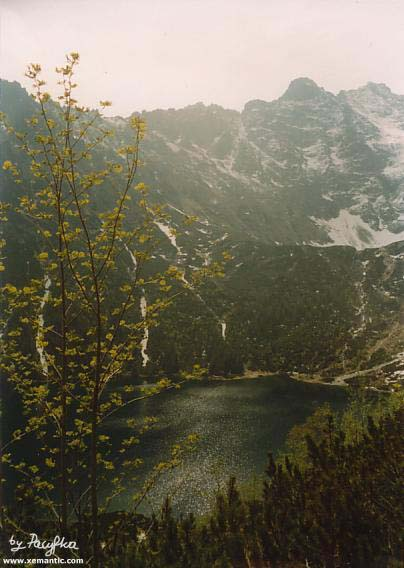

| Adam Asnyk (1838-1897)
Morskie Oko
I
Ponad płaszczami borów, ściśnięte zaporą
Ścian olbrzymich, co wkoło ze sobą się zwarły,
Ciemne wody rozlewa posępne jezioro,
Odzwierciedlając w łonie głazów świat zamarły.
Stoczone z szczytów bryły, mchu pokryte korą,
Na brzegach rumowisko swoje rozpostarły;
Na nim pogięte, krzywe kosodrzewu karły
Gdzieniegdzie nagą pustkę w wianki swe ubiorą.
Granitowe opoki, wyniesione w chmury,
Rzadko tam żywsze blaski słoneczne dopuszczą...
I tajemnicze głębie kryje cień ponury.
Cisza - tylko w oddali gdzieś potoki pluszczą
Lub wichry, przelatując nad zmartwiałą puszczą,
Swym świstem grozę dzikiej powiększą natury.
|

"...Ciemne wody rozlewa posępne jezioro..."
Morskie Oko ze szlaku na Świstówkę
fot. Pacyfka
|